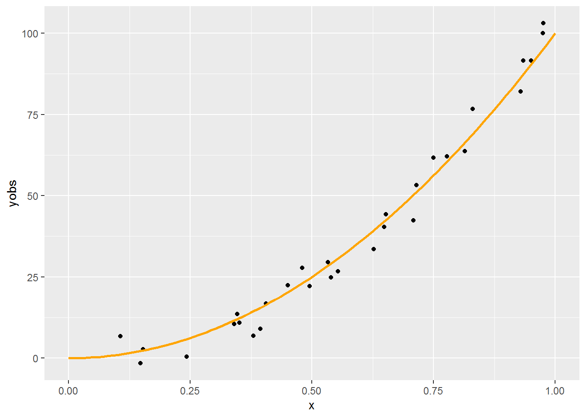
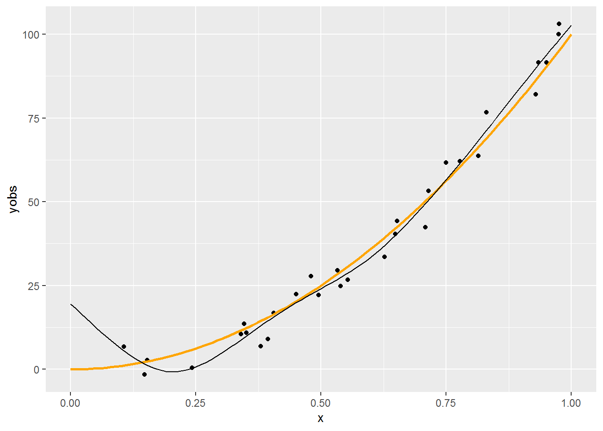
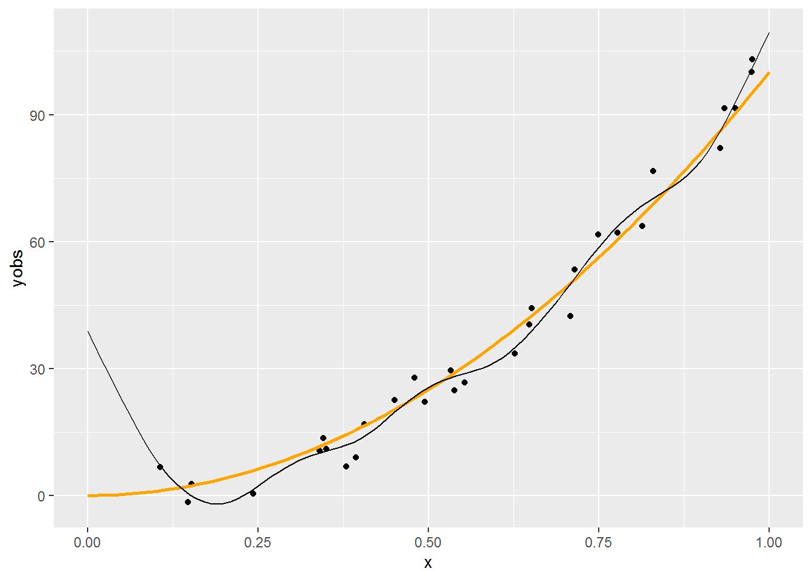
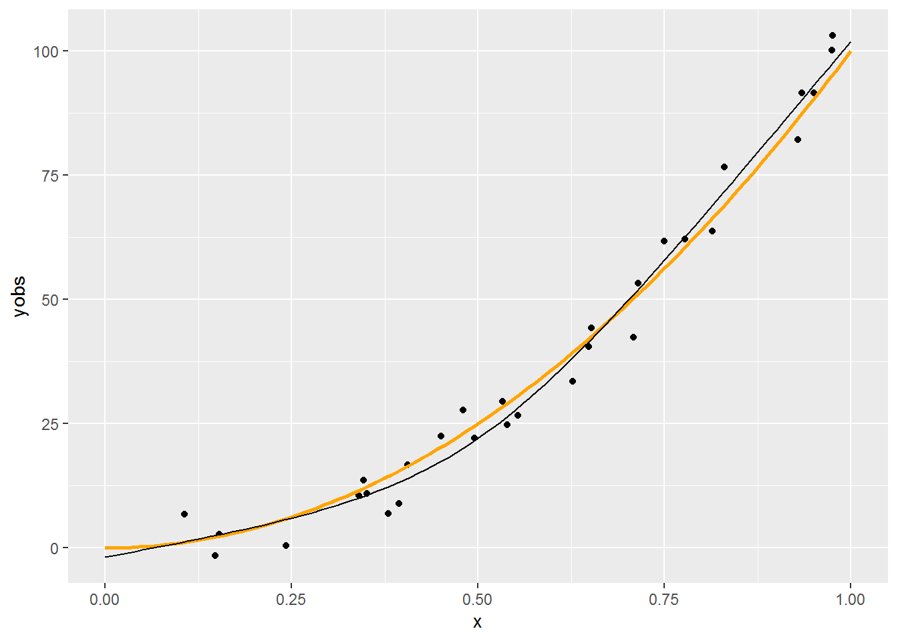
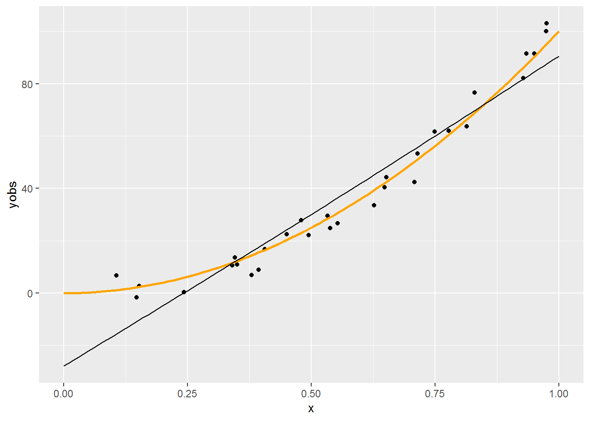
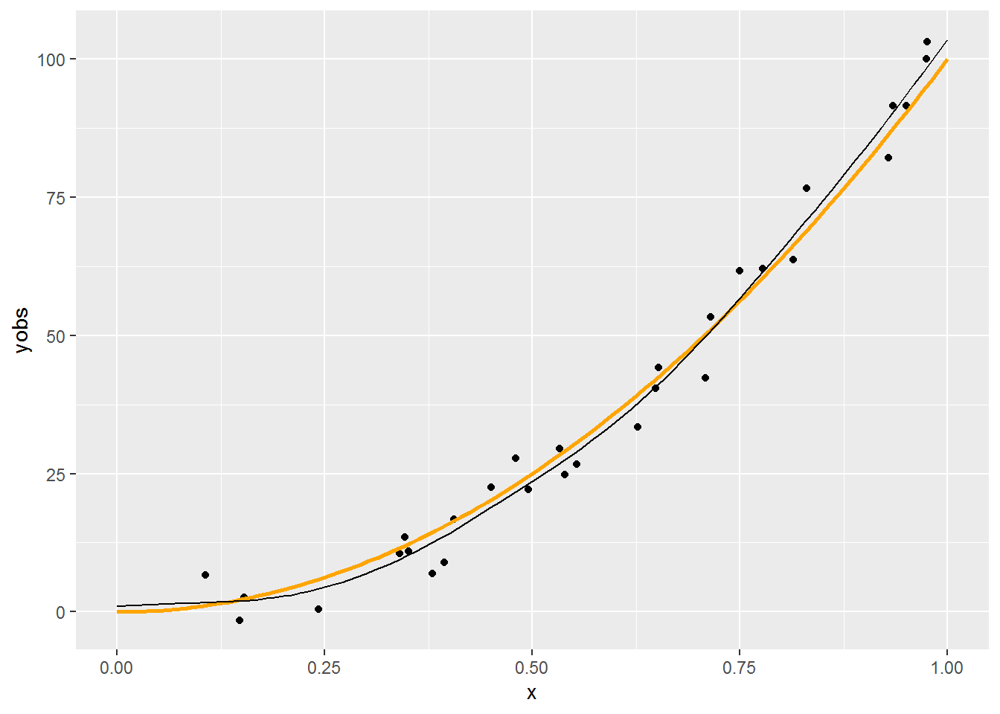
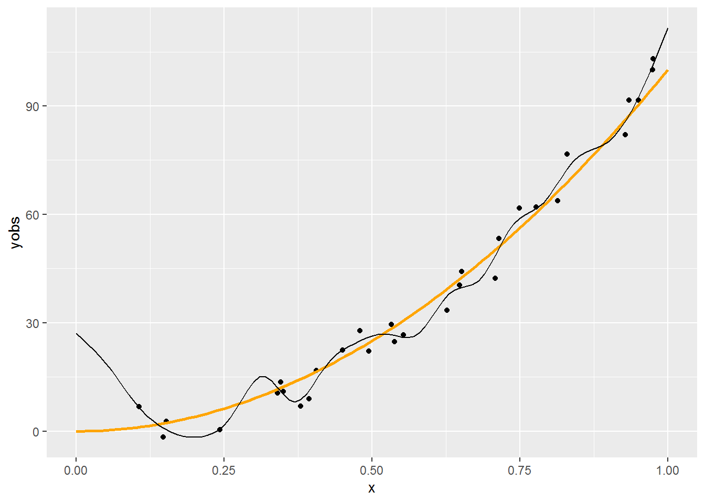
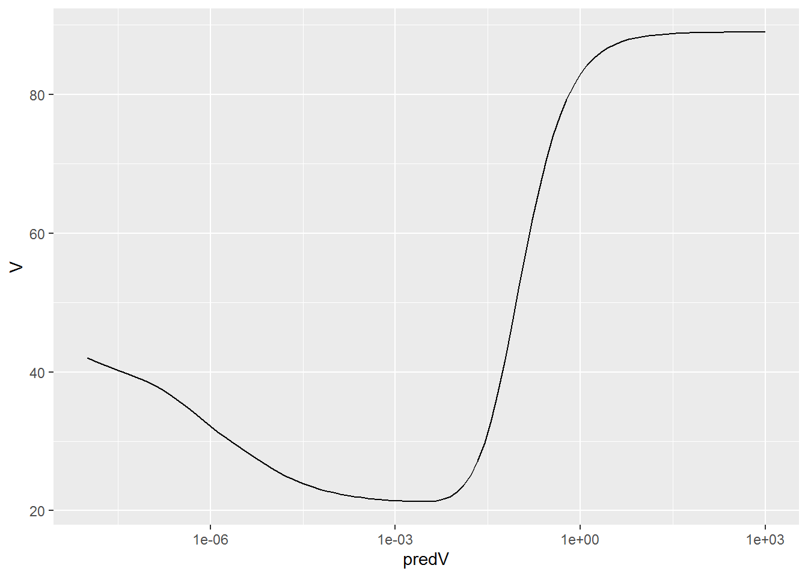

3 . fejezet Spline-regresszió becslése bázisfüggvényekkel, penalizáltan
3.1 Bázisfüggvényekkel felírás
3.1.1 Hogyan becsüljük meg a spline-regressziót?
Amiről nem beszéltünk eddig: ez mind szép, de hogyan tudunk ténylegesen is megbecsülni egy ilyen spline-regressziót?
Ehhez visszalépünk pár lépést, és bevezetünk egy első kicsit absztraktnak tűnő, de később rendkívül jó szolgálatot tevő megközelítést
Bár a célunk a spline-regresszió becslésének a megoldása, de a dolog – értelemszerűen – alkalmazható polinomiális regresszióra is (legfeljebb nincs sok értelme, mert az hagyományos módszerekkel is jól kézbentartható), úgyhogy először azon fogjuk illusztrálni
Amiről nem beszéltünk eddig: ez mind szép, de hogyan tudunk ténylegesen is megbecsülni egy ilyen spline-regressziót?
Ehhez visszalépünk pár lépést, és bevezetünk egy első kicsit absztraktnak tűnő, de később rendkívül jó szolgálatot tevő megközelítést
Bár a célunk a spline-regresszió becslésének a megoldása, de a dolog – értelemszerűen – alkalmazható polinomiális regresszióra is (legfeljebb nincs sok értelme, mert az hagyományos módszerekkel is jól kézbentartható), úgyhogy először azon fogjuk illusztrálni
3.1.2 Polinomok tere mint függvénytér
A másodfokú polinomok – mint függvények – összessége függvényteret alkot
Ez egy olyan vektortér, aminek az elemei a függvények, a skalárok a valós számok, a két művelet pedig
-
Skalárral szorzás: \(\left(cf\right)\left(x\right)=cf\left(x\right)\)
-
Vektorok (azaz függvények) összeadása: \(\left(f+g\right)\left(x\right)=f\left(x\right)+g\left(x\right)\), tehát pontonkénti összeadás
Belátható, hogy ez teljesíti a vektortéraxiómákat, mert zárt a két műveletre (másodfokú polinomok összege másodfokú polinom és másodfokú polinom konstansszorosa másodfokú polinom), és a többi követelményt is teljesíti
A másodfokú polinomok – mint függvények – összessége függvényteret alkot
Ez egy olyan vektortér, aminek az elemei a függvények, a skalárok a valós számok, a két művelet pedig
Skalárral szorzás: \(\left(cf\right)\left(x\right)=cf\left(x\right)\)
Vektorok (azaz függvények) összeadása: \(\left(f+g\right)\left(x\right)=f\left(x\right)+g\left(x\right)\), tehát pontonkénti összeadás
Belátható, hogy ez teljesíti a vektortéraxiómákat, mert zárt a két műveletre (másodfokú polinomok összege másodfokú polinom és másodfokú polinom konstansszorosa másodfokú polinom), illetve az összeadásra nézve kommutatív csoport, a szorzás és az összeadás mindkét irányból disztributív, van egységelem szorzásra nézve és a skalárszorzás valamint a valós számok szorzása kompatibilis
3.1.3 Polinomok terének bázisa
Szuper, de mindez mire jó?
Ha vektortér, akkor létezik bázisa, azaz olyan vektorok halmaza, melyekből lineáris kombinációval minden vektor – egyértelműen – előállítható (bázis: lineárisan független generátorrendszer)
A bázis nem feltétlenül egyértelmű, de az elemszáma igen, ez a vektortér dimenziója
Például a másodfokú polinomok jó bázisa \(\left\{1,x,x^2\right\}\), nyilvánvaló, hogy ebből tényleg minden \(ax^2+bx+c\) másodfokú polinom előállítható lineáris kombinációval (triviálisan, a súlyok \(c\), \(b\) és \(a\))
Függvényterek esetében a bázis elemeit bázisfüggvényeknek is szokás nevezni, az \(\left\{1,x,x^2\right\}\) tehát a másodfokú polinomok bázisfüggvényei
Szuper, de mindez mire jó?
Ha vektortér, akkor létezik bázisa, azaz olyan vektorok halmaza, melyekből lineáris kombinációval minden vektor – egyértelműen – előállítható (bázis: lineárisan független generátorrendszer)
A bázis nem feltétlenül egyértelmű, de az elemszáma igen, ez a vektortér dimenziója
Például a másodfokú polinomok jó bázisa \(\left\{1,x,x^2\right\}\), nyilvánvaló, hogy ebből tényleg minden \(ax^2+bx+c\) másodfokú polinom előállítható lineáris kombinációval (triviálisan, a súlyok \(c\), \(b\) és \(a\))
Függvényterek esetében a bázis elemeit bázisfüggvényeknek is szokás nevezni, az \(\left\{1,x,x^2\right\}\) tehát a másodfokú polinomok bázisfüggvényei
3.1.4 A polinomok terének dimenziója
Mivel mutattunk egy konkrét bázist, így a dimenzió nyilván 3, de a későbbiek szempontjából jól jön egy másik módszer is
Azzal, hogy az \(ax^2+bx+c\) polinomot megfeleltettük az \(\left(a,b,c\right)\) valós számhármasnak, a polinomok tere és a valós számhármasok tere (az \(\mathbb{R}^3\)) között létesítettünk egy izomorfizmust (a leképezés művelettartó és kölcsönösen egyértelmű)
Emiatt a polinomok terének ugyanaz a dimenziója, mint az \(\mathbb{R}^3\)-nak, ami viszont természetesen 3
Ez a módszer általában is használható: a dimenzió a felíráshoz szükséges paraméterek száma (feltéve, hogy ezek valós számok, valamint mindegyikhez tartozik egy polinom és viszont)
Mivel mutattunk egy konkrét bázist, így a dimenzió nyilván 3, de a későbbiek szempontjából jól jön egy másik módszer is
Azzal, hogy az \(ax^2+bx+c\) polinomot megfeleltettük az \(\left(a,b,c\right)\) valós számhármasnak, a polinomok tere és a valós számhármasok tere (az \(\mathbb{R}^3\)) között létesítettünk egy izomorfizmust (a leképezés művelettartó és kölcsönösen egyértelmű)
Emiatt a polinomok terének ugyanaz a dimenziója, mint az \(\mathbb{R}^3\)-nak, ami viszont természetesen 3
Ez a módszer általában is használható: a dimenzió a felíráshoz szükséges paraméterek száma (feltéve, hogy ezek valós számok, valamint mindegyikhez tartozik egy polinom és viszont)
3.1.5 Spline-ok függvénytere
Mindez a spline-okra is igaz!
Érthető: minden pontban két polinomot adunk össze, vagy polinomot szorzunk skalárral, az eredmény polinom (már láttuk) – így tud spline adott pontja lenni!
Azaz: spline-okat is elő tudunk állítani bázisfüggvények lineáris kombinációjaként!
Mindez a spline-okra is igaz!
Érthető: minden pontban két polinomot adunk össze, vagy polinomot szorzunk skalárral, az eredmény polinom (már láttuk) – így tud spline adott pontja lenni!
Azaz: spline-okat is elő tudunk állítani bázisfüggvények lineáris kombinációjaként!
3.1.6 Hány dimenziós a spline-ok tere?
Mielőtt megkeressük a spline-ok terének egy bázisát (azaz a konkrét bázisfüggvényeket), tisztázni kellene, hogy hány bázisfüggvényt keresünk egyáltalán, azaz hány dimenziós a spline-ok függvénytere
Naiv ötlet (köbös spline-okat használva példaként): van \(q-1\) szakasz (\(q-2\) knot, ami meghatároz \(q-3\) szakaszt meg a két vége; úgy is felfogható, hogy a két végével együtt \(q\) knot van, ami meghatároz \(q-1\) szakaszt) és mindegyiken egy harmadfokú polinom (aminek 4 paramétere van), akkor az \(4q-4\) paraméter
Igen ám, de vannak megkötések: a knotokban a függvényérték és az első két derivált egyezik
Minden megkötés minden pontban 1 egyenlet, az 1-gyel csökkenti a paraméterek számát: van \(q-2\) knot és 3 megkötés, az \(3q-6\) csökkentés, marad \(q+2\) paraméter
De mivel természetes, így a végpontokban is van 1-1 megkötés: marad \(q\) paraméter, azaz \(q\) dimenziós a természetes köbös spline-ok tere (ezért neveztük a knot-ok számát \(q-2\)-nek!)
Mielőtt megkeressük a spline-ok terének egy bázisát (azaz a konkrét bázisfüggvényeket), tisztázni kellene, hogy hány bázisfüggvényt keresünk egyáltalán, azaz hány dimenziós a spline-ok függvénytere
Naiv ötlet (köbös spline-okat használva példaként): van \(q-1\) szakasz (\(q-2\) knot, ami meghatároz \(q-3\) szakaszt meg a két vége; úgy is felfogható, hogy a két végével együtt \(q\) knot van, ami meghatároz \(q-1\) szakaszt) és mindegyiken egy harmadfokú polinom (aminek 4 paramétere van), akkor az \(4q-4\) paraméter
Igen ám, de vannak megkötések: a knotokban a függvényérték és az első két derivált egyezik
Minden megkötés minden pontban 1 egyenlet, az 1-gyel csökkenti a paraméterek számát: van \(q-2\) knot és 3 megkötés, az \(3q-6\) csökkentés, marad \(q+2\) paraméter
De mivel természetes, így a végpontokban is van 1-1 megkötés: marad \(q\) paraméter, azaz \(q\) dimenziós a természetes köbös spline-ok tere (ezért neveztük a knot-ok számát \(q-2\)-nek!)
3.1.7 Mik a spline-ok bázisfüggvényei?
Természetesen itt is igaz, hogy adott, rögzített spline-osztályra (pl. természetes köbös) is végtelen sok bázis van
Köztük célszerűség alapján választhatunk
A részletek nélkül két példa:
-
\(b_1\left(x\right)=1, b_2\left(x\right)=x, b_i\left(x\right)=\left|x-x_{i-2}^{\ast}\right|^3 (i=3,4,\ldots,q)\)
-
\(b_1\left(x\right)=1, b_2\left(x\right)=x, b_i\left(x\right)=R\left(x,x_{i-2}^{\ast}\right) (i=3,4,\ldots,q)\), ahol \(R\) egy nevezetes – elég hosszú, bár nem túl bonyolult – függvény (hamar látni fogjuk, hogy ez miért előnyös), annyi fontos, hogy \(x\) a \(\left[0,1\right]\) intervallumban essen (egyszerű átskálázssal mindig elérhető)
Most már csak a regresszió kivitelezését kell kitalálnunk
Természetesen itt is igaz, hogy adott, rögzített spline-osztályra (pl. természetes köbös) is végtelen sok bázis van
Köztük célszerűség alapján választhatunk
A részletek nélkül két példa:
\(b_1\left(x\right)=1, b_2\left(x\right)=x, b_i\left(x\right)=\left|x-x_{i-2}^{\ast}\right|^3 (i=3,4,\ldots,q)\)
\(b_1\left(x\right)=1, b_2\left(x\right)=x, b_i\left(x\right)=R\left(x,x_{i-2}^{\ast}\right) (i=3,4,\ldots,q)\), ahol \(R\) egy nevezetes – elég hosszú, bár nem túl bonyolult – függvény (hamar látni fogjuk, hogy ez miért előnyös), annyi fontos, hogy \(x\) a \(\left[0,1\right]\) intervallumban essen (egyszerű átskálázással mindig elérhető)
Most már csak a regresszió kivitelezését kell kitalálnunk
3.2 Modellmátrix előállítása
3.2.1 A bázisfüggvények használatának ereje
A bázisfüggvények használatának két hatalmas előnye van:
-
A probléma visszavezethető velük a sima lineáris regresszióra
-
Sőt, ehhez a modellmátrix is könnyen előállítható
A bázisfüggvények használatának két hatalmas előnye van:
A probléma visszavezethető velük a sima lineáris regresszióra
Sőt, ehhez a modellmátrix is könnyen előállítható
3.2.2 Bázisfüggvények használata másodfokú polinomnál
Legyen \(b_1\left(x\right)=1\), \(b_2\left(x\right)=x\) és \(b_3\left(x\right)=x^2\) a bázisunk
Az eredeti regresszió: \[ y_i = \beta_1 + \beta_2 x_i + \beta_3 x_i^2 + \varepsilon_i \]
Átírva bázisokra (lényegében transzformált magyarázó változók): \[ y_i = \beta_1 b_1\left(x_i\right) + \beta_2 b_2\left(x_i\right) + \beta_3 b_3\left(x_i\right) + \varepsilon_i \]
Ez már tiszta lineáris regresszió
Legyen \(b_1\left(x\right)=1\), \(b_2\left(x\right)=x\) és \(b_3\left(x\right)=x^2\) a bázisunk
Az eredeti regresszió: \[ y_i = \beta_1 + \beta_2 x_i + \beta_3 x_i^2 + \varepsilon_i \]
Átírva bázisokra (lényegében transzformált magyarázó változók): \[ y_i = \beta_1 b_1\left(x_i\right) + \beta_2 b_2\left(x_i\right) + \beta_3 b_3\left(x_i\right) + \varepsilon_i \]
Ez már tiszta lineáris regresszió
3.2.3 Bázisfüggvények használatának előnye
Ez úgy tűnik, hogy csak egy nagyon nyakatekert felírás egy amúgy egyszerű problémára
Valójában viszont egy elképesztően erőteljes dolgot nyertünk: minden olyan függvény, legyen bármilyen komplikált is, ami felírható bázisfüggvényekkel (azaz az osztálya függvényosztályt alkot), az berakható egy kutyaközönséges regresszióba (azaz lehet ő a regrssziós függvény) a fenti transzformációval, tehát \[ \sum_{i=1}^q \beta_i b_i\left(x\right) \] alakban
(Azaz minden függvény, ami egy függvénytér eleme)
Ez úgy tűnik, hogy csak egy nagyon nyakatekert felírás egy amúgy egyszerű problémára
Valójában viszont egy elképesztően erőteljes dolgot nyertünk: minden olyan függvény, legyen bármilyen komplikált is, ami felírható bázisfüggvényekkel (azaz az osztálya függvényosztályt alkot), az berakható egy kutyaközönséges regresszióba (azaz lehet ő a regrssziós függvény) a fenti transzformációval, tehát \[ \sum_{i=1}^q \beta_i b_i\left(x\right) \] alakban
(Azaz minden függvény, ami egy függvénytér eleme)
3.2.4 A bázisfüggvények ereje, 1. felvonás
Még egyszer: minden függvény, ami felírható bázisfüggvényekkel
Azaz: minden
…és az összesnek pontosan ugyanúgy az lesz az alakja, hogy \[ \sum_{i=1}^q \beta_i b_i\left(x\right), \] egyedül a bázisfüggvényt kell az adott esetnek megfelelően megválasztani
Tehát a spline is mehet ugyanígy (csak megfelelő \(b_i\)-kkel)!
És ha ez az alak megvan, akkor onnantól természetesen sima lineáris regresszióval elintézhető
Még egyszer: minden függvény, ami felírható bázisfüggvényekkel
Azaz: minden
…és az összesnek pontosan ugyanúgy az lesz az alakja, hogy \[ \sum_{i=1}^q \beta_i b_i\left(x\right), \] egyedül a bázisfüggvényt kell az adott esetnek megfelelően megválasztani
Tehát a spline is mehet ugyanígy (csak megfelelő \(b_i\)-kkel)!
És ha ez az alak megvan, akkor onnantól természetesen sima lineáris regresszióval elintézhető
3.2.5 A bázisfüggvények ereje, 2. felvonás
Ráadásul az \(\mathbf{X}\) modellmátrix (design mátrix) előállítása is nagyon könnyű lesz: az \(i\)-edik sora \[ \left[ b_1\left(x_i\right), b_2\left(x_i\right), \ldots, b_q\left(x_i\right) \right] \]
Így maga a mátrix az \(\mathbf{x}\) és az \(\left[1,2,\ldots,q\right]\) vektor külső szorzata (tenzorszorzata), ha a művelet alatt az oszlopban szereplő érték által meghatározott bázisfüggvény sorbeli elemre történő alkalmazását értjük, tehát \(i\otimes j:=b_j\left(x_i\right)\), és így \[ \begin{aligned} & \begin{pmatrix} \quad 1 & \qquad \enspace 2 & \quad \; \cdots & \quad q\quad \; \end{pmatrix} \\ \begin{pmatrix}x_1\\x_2\\ \vdots \\ x_n\end{pmatrix} & \begin{bmatrix}b_1\left(x_1\right) & b_2\left(x_1\right) & \cdots & b_q\left(x_1\right) \\ b_1\left(x_2\right) & b_2\left(x_2\right) & \cdots & b_q\left(x_2\right) \\ \vdots & \vdots & \ddots & \vdots \\ b_1\left(x_n\right) & b_2\left(x_n\right) & \cdots & b_q\left(x_n\right) \end{bmatrix} \end{aligned} \]
Így, a teljes modellmátrix egy lépésben megkapható…
… majd közvetlenül rakható is bele a sima lineáris regresszióba (ld. 1. előny): \[ \widehat{\boldsymbol{\beta}}=\left(\mathbf{X}^T\mathbf{X}\right)^{-1}\mathbf{X}^T\mathbf{y} \]
Ráadásul az \(\mathbf{X}\) modellmátrix (design mátrix) előállítása is nagyon könnyű lesz: az \(i\)-edik sora \[ \left[ b_1\left(x_i\right), b_2\left(x_i\right), \ldots, b_q\left(x_i\right) \right] \]
Így maga a mátrix az \(\mathbf{x}\) és az \(\left[1,2,\ldots,q\right]\) vektor külső szorzata (tenzorszorzata), ha a művelet alatt az oszlopban szereplő érték által meghatározott bázisfüggvény sorbeli elemre történő alkalmazását értjük, tehát \(i\otimes j:=b_j\left(x_i\right)\), és így \[ \begin{aligned} & \begin{pmatrix} \quad 1 & \qquad \enspace 2 & \quad \; \cdots & \quad q\quad \; \end{pmatrix} \\ \begin{pmatrix}x_1\\x_2\\ \vdots \\ x_n\end{pmatrix} & \begin{bmatrix}b_1\left(x_1\right) & b_2\left(x_1\right) & \cdots & b_q\left(x_1\right) \\ b_1\left(x_2\right) & b_2\left(x_2\right) & \cdots & b_q\left(x_2\right) \\ \vdots & \vdots & \ddots & \vdots \\ b_1\left(x_n\right) & b_2\left(x_n\right) & \cdots & b_q\left(x_n\right) \end{bmatrix} \end{aligned} \]
Így, a teljes modellmátrix egy lépésben megkapható…
… majd közvetlenül rakható is bele a sima lineáris regresszióba (ld. 1. előny): \[ \widehat{\boldsymbol{\beta}}=\left(\mathbf{X}^T\mathbf{X}\right)^{-1}\mathbf{X}^T\mathbf{y} \]
3.2.6 Megvalósítás R alatt
Folytassuk az előző fejezet példáját, csak az egyszerűség kedvéért a \(\left[0,1\right]\) intervallumon lévő \(x\)-szel (ha nem is így lenne, ez átskálázással mindig elérhető):
n <- 30
x <- runif(n, 0, 1)
xgrid <- seq(0, 1, length.out = 100)
ygrid <- 100*xgrid^2
yobs <- 100*x^2 + rnorm(n, 0, 5)
p <- ggplot(data.frame(x, yobs)) + geom_point(aes(x = x, y = yobs)) +
geom_line(data = data.frame(xgrid, ygrid), aes(x = xgrid, y = ygrid),
color = "orange", lwd = 1)
p
A csomópontokat egyenletesen vesszük fel, számuk \(q-2\):
A bázisfüggvényeknél említett \(R\) függvény:
rk <- function( x, z ) {
((z-0.5)^2-1/12)*((x-0.5)^2-1/12)/4-((abs(x-z)-0.5)^4-(abs(x-z)-0.5)^2/2+7/240)/24
}A modellmátrixot csupa 1-gyel inicializáljuk, így az első oszlop rendben is lesz:
Beállítjuk a második oszlopot is:
És most jön a trükk: az outer tetszőleges függvénnyel tud külső szorzatot
képezni:
Mindezeket a késsőbbiekre tekintettel egy függvénybe is összefoghatjuk:
spl.X <- function(x, xk) {
q <- length(xk) + 2
n <- length(x)
X <- matrix(1, n, q)
X[, 2] <- x
X[, 3:q] <- outer(x, xk, FUN = rk)
X
}Ezzel a modellmátrixszal végrehajthatjuk a regressziót (ne felejtsük, tengelymetszetre nincs szükség, pontosabban külön tengelymetszre nincs, hiszen az már benne van az így összerakott X-ben):
Az eredmény szemléltetéséhez az xgrid pontjait is kifejtjük a spline-nal:
Xp <- spl.X(xgrid, xk)
yp <- Xp%*%coef(fit)
p + geom_line(data = data.frame(xgrid, yp), aes(x = xgrid, y = yp))Még egy kicsit automatizáljunk:
predspline <- function(x, y, q) {
xk <- (1:(q-2))/(q-1)
X <- spl.X(x, xk)
fit <- lm(y ~ X - 1)
xp <- 0:100/100
Xp <- spl.X(xp, xk)
yp <- Xp%*%coef(fit)
list(fit = fit, xp = xp, yp = yp)
}Így például könnyen megnézhetjük az eredményt különböző \(q\)-kkal:



Látszik, hogy a \(q=6\) nagyjából megfelelő, a 11 kicsit sok, a 3 pedig egy leheletnyit mintha kevés lenne. (Most persze könnyű dolgunk van, hiszen tudjuk mi az igazság!) Erre a kérdésre nemsokára visszatérünk.
3.3 Penalizálás
3.3.1 Dimenzió meghatározása
A \(q\) dimenzió tehát az illeszkedés szabadságát határozza meg
Valahogy ezt is meg kellene határozni
Jön a fő kérdéskör: a túlilleszkedés elleni védekezés
Milyen legyen a ,,simítás foka"?
A \(q\) dimenzió tehát az illeszkedés szabadságát határozza meg
Valahogy ezt is meg kellene határozni
Jön a fő kérdéskör: a túlilleszkedés elleni védekezés
Milyen legyen a ,,simítás foka"?
3.3.2 Simítás fokának meghatározása
Tehát \(q\)-t kellene valahogy jól belőni
Egyszerű modellszelekció?
- Vagy nem beágyazott modellek szelekciója, vagy nem ekvidisztáns knot-ok, egyik sem túl szerencsés
Alternatív ötlet: \(q\) legyen inkább rögzített (elég nagy értéken, kicsit a várható fölé lőve), de a függvényformát nem engedjük teljesen szabadon alakulni
Hogyan? Büntetjük a túl ,,zizegős" függvényt!
Ez épp a penalizált regresszió alapötlete
És ami rendkívül fontos: így már jellemzően sem \(q\) pontos megválasztása, sem a knot-ok pontos helye nem bír nagy jelentőséggel (választhatjuk például egyenletesen)!
Tehát \(q\)-t kellene valahogy jól belőni
Egyszerű modellszelekció?
- Vagy nem beágyazott modellek szelekciója, vagy nem ekvidisztáns knot-ok, egyik sem túl szerencsés
Alternatív ötlet: \(q\) legyen inkább rögzített (elég nagy értéken, kicsit a várható fölé lőve), de a függvényformát nem engedjük teljesen szabadon alakulni
Hogyan? Büntetjük a túl ,,zizegős" függvényt!
Ez épp a penalizált regresszió alapötlete
És ami rendkívül fontos: így már jellemzően sem \(q\) pontos megválasztása, sem a knot-ok pontos helye nem bír nagy jelentőséggel (választhatjuk például egyenletesen)!
3.3.3 Penalizált regresszió
Klasszikus megoldás: a második derivált jelzi adott pontban a ,,zizegősséget", ezt kiintegrálva kapunk egy összesített mértéket az egész függvényre
Valamilyen súllyal ezt vegyük figyelembe: \[ \left\|\mathbf{y}-\mathbf{X}\boldsymbol{\beta}\right\|^2+\lambda\int_0^1 \left[f''\left(x\right)\right]^2 \dif x \]
A \(\lambda\) a simítási paraméter, ez határozza meg a trade-off-ot a jó illeszkedés és a simaság között
- \(\lambda=0\): penalizálatlan becslés, \(\lambda\rightarrow\infty\): egyenes regressziós függvény
Klasszikus megoldás: a második derivált jelzi adott pontban a ,,zizegősséget", ezt kiintegrálva kapunk egy összesített mértéket az egész függvényre
Valamilyen súllyal ezt vegyük figyelembe: \[ \left\|\mathbf{y}-\mathbf{X}\boldsymbol{\beta}\right\|^2+\lambda\int_0^1 \left[f''\left(x\right)\right]^2 \dif x \]
A \(\lambda\) a simítási paraméter, ez határozza meg a trade-off-ot a jó illeszkedés és a simaság között
- \(\lambda=0\): penalizálatlan becslés, \(\lambda\rightarrow\infty\): egyenes regressziós függvény
3.3.4 A simasági büntetőtag meghatározása
A regressziós függvény alakja: \(f\left(x\right)=\sum_{i=1}^q \beta_i b_i\left(x\right)\)
Kétszer deriválva: \(f''\left(x\right)=\sum_{i=1}^q \beta_i b_i''\left(x\right)\)
Négyzetre emelve: \(\left[f''\left(x\right)\right]^2=\sum_{i=1}^q \sum_{j=1}^q \beta_i b_i''\left(x\right) b_j''\left(x\right) \beta_j\)
Kiintegrálva: \(\int_0^1 \left[f''\left(x\right)\right]^2 \dif x=\sum_{i=1}^q \sum_{j=1}^q \beta_i \left(\int_0^1 b_i''\left(x\right) b_j''\left(x\right) \dif x\right) \beta_j\)
De hát ez épp egy kvadratikus alak! (\(\sum_{i=1}^q \sum_{j=1}^q x_i a_{ij} x_j= \mathbf{x}^T \mathbf{A} \mathbf{x}\))
Legyen \(S_{ij}=\int_0^1 b_i''\left(x\right) b_j''\left(x\right) \dif x\) és \(\mathbf{S}\) az ezekből alkotott mátrix, akkor tehát a simítási büntetőtag: \[ \lambda \boldsymbol{\beta}^T\mathbf{S}\boldsymbol{\beta} \]
Az előbb definiált \(R\)-rel \(\mathbf{S}\) alakja nagyon egyszerű lesz: \(S_{i+2,j+2}=R\left(x_i^{\ast},x_j^{\ast}\right)\), az első két oszlop és sor pedig csupa nulla
A regressziós függvény alakja: \(f\left(x\right)=\sum_{i=1}^q \beta_i b_i\left(x\right)\)
Kétszer deriválva: \(f''\left(x\right)=\sum_{i=1}^q \beta_i b_i''\left(x\right)\)
Négyzetre emelve: \(\left[f''\left(x\right)\right]^2=\sum_{i=1}^q \sum_{j=1}^q \beta_i b_i''\left(x\right) b_j''\left(x\right) \beta_j\)
Kiintegrálva: \(\int_0^1 \left[f''\left(x\right)\right]^2 \dif x=\sum_{i=1}^q \sum_{j=1}^q \beta_i \left(\int_0^1 b_i''\left(x\right) b_j''\left(x\right) \dif x\right) \beta_j\)
De hát ez épp egy kvadratikus alak! (\(\sum_{i=1}^q \sum_{j=1}^q x_i a_{ij} x_j= \mathbf{x}^T \mathbf{A} \mathbf{x}\))
Legyen \(S_{ij}=\int_0^1 b_i''\left(x\right) b_j''\left(x\right) \dif x\) és \(\mathbf{S}\) az ezekből alkotott mátrix, akkor tehát a simítási büntetőtag: \[ \lambda \boldsymbol{\beta}^T\mathbf{S}\boldsymbol{\beta} \]
Az előbb definiált \(R\)-rel \(\mathbf{S}\) alakja nagyon egyszerű lesz: \(S_{i+2,j+2}=R\left(x_i^{\ast},x_j^{\ast}\right)\), az első két oszlop és sor pedig csupa nulla
3.3.5 Megvalósítás R alatt
Az xk szokásosan a knot-ok helye; a mátrixot pedig csupa nullával inicializáljuk, hogy az első két oszlop és sor egyből jó is legyen és csak a többit kelljen kitölteni:
3.3.6 A simítási büntetőtag beépítése a regressziós célfüggvénybe
Kényelmes lenne, ha \(\left\|\mathbf{y}-\mathbf{X}\boldsymbol{\beta}\right\|^2+\lambda \boldsymbol{\beta}^T\mathbf{S}\boldsymbol{\beta}\) helyett írhatnánk egyetlen normát célfüggvényként
Ez nem nehéz, ha a második tagot át tudjuk normává alakítani, hiszen (innentől némi blokkmátrix műveletekre szükség lesz) \[ \left\|\mathbf{a}\right\|^2+\left\|\mathbf{b}\right\|^2=\left\|\begin{pmatrix}\mathbf{a} \\ \mathbf{b} \end{pmatrix}\right\|^2 \]
Legyen \(\mathbf{B}\) olyan, hogy \(\mathbf{B}^T\mathbf{B}=\mathbf{S}\) (pl. spektrális dekompozícióval, vagy Cholesky-dekompozícióval megtalálható a mátrix ilyen ,,négyzetgyöke"), ekkor \[ \lambda \boldsymbol{\beta}^T\mathbf{S}\boldsymbol{\beta} = \lambda \boldsymbol{\beta}^T\mathbf{B}^T\mathbf{B}\boldsymbol{\beta}=\lambda \left( \mathbf{B} \boldsymbol{\beta}\right)^T\mathbf{B}\boldsymbol{\beta} =\left( \sqrt{\lambda} \mathbf{B} \boldsymbol{\beta}\right)^T\left(\sqrt{\lambda}\mathbf{B}\boldsymbol{\beta}\right) \]
Ezzel meg is vagyunk, hiszen a norma egyszerűen \(\left\|\mathbf{a}\right\|^2=\mathbf{a}^T\mathbf{a}\), így \[ \lambda \boldsymbol{\beta}^T\mathbf{S}\boldsymbol{\beta} = \left\|\sqrt{\lambda} \mathbf{B} \boldsymbol{\beta}\right\|^2 \] ahonnan \[ \left\|\mathbf{y}-\mathbf{X}\boldsymbol{\beta}\right\|^2+\lambda \boldsymbol{\beta}^T\mathbf{S}\boldsymbol{\beta}=\left\|\mathbf{y}-\mathbf{X}\boldsymbol{\beta}\right\|^2+\left\|\sqrt{\lambda} \mathbf{B} \boldsymbol{\beta}\right\|^2\] és így, az előzőek szerint \[ \left\|\mathbf{y}-\mathbf{X}\boldsymbol{\beta}\right\|^2+\left\|\sqrt{\lambda} \mathbf{B} \boldsymbol{\beta}\right\|^2=\left\|\begin{pmatrix}\mathbf{y}-\mathbf{X}\boldsymbol{\beta} \\ \sqrt{\lambda} \mathbf{B} \boldsymbol{\beta} \end{pmatrix}\right\|^2 \]
Jó lenne \(\boldsymbol{\beta}\)-t kiemelni; ez nem is túl nehéz, hiszen \(\mathbf{a}\) és \(-\mathbf{a}\) normája ugyanaz: \[ \left\|\begin{pmatrix}\mathbf{y}-\mathbf{X}\boldsymbol{\beta} \\ \sqrt{\lambda} \mathbf{B} \boldsymbol{\beta} \end{pmatrix}\right\|^2 = \left\| \begin{pmatrix} \mathbf{y} \\ \mathbf{0} \end{pmatrix} - \begin{pmatrix}\mathbf{X} \\ \sqrt{\lambda} \mathbf{B} \end{pmatrix}\boldsymbol{\beta}\right\|^2 \]
Kényelmes lenne, ha \(\left\|\mathbf{y}-\mathbf{X}\boldsymbol{\beta}\right\|^2+\lambda \boldsymbol{\beta}^T\mathbf{S}\boldsymbol{\beta}\) helyett írhatnánk egyetlen normát célfüggvényként
Ez nem nehéz, ha a második tagot át tudjuk normává alakítani, hiszen (innentől némi blokkmátrix műveletekre szükség lesz) \[ \left\|\mathbf{a}\right\|^2+\left\|\mathbf{b}\right\|^2=\left\|\begin{pmatrix}\mathbf{a} \\ \mathbf{b} \end{pmatrix}\right\|^2 \]
Legyen \(\mathbf{B}\) olyan, hogy \(\mathbf{B}^T\mathbf{B}=\mathbf{S}\) (pl. spektrális dekompozícióval, vagy Cholesky-dekompozícióval megtalálható a mátrix ilyen ,,négyzetgyöke"), ekkor \[ \lambda \boldsymbol{\beta}^T\mathbf{S}\boldsymbol{\beta} = \lambda \boldsymbol{\beta}^T\mathbf{B}^T\mathbf{B}\boldsymbol{\beta}=\lambda \left( \mathbf{B} \boldsymbol{\beta}\right)^T\mathbf{B}\boldsymbol{\beta} =\left( \sqrt{\lambda} \mathbf{B} \boldsymbol{\beta}\right)^T\left(\sqrt{\lambda}\mathbf{B}\boldsymbol{\beta}\right) \]
Ezzel meg is vagyunk, hiszen a norma egyszerűen \(\left\|\mathbf{a}\right\|^2=\mathbf{a}^T\mathbf{a}\), így \[ \lambda \boldsymbol{\beta}^T\mathbf{S}\boldsymbol{\beta} = \left\|\sqrt{\lambda} \mathbf{B} \boldsymbol{\beta}\right\|^2 \] ahonnan \[ \left\|\mathbf{y}-\mathbf{X}\boldsymbol{\beta}\right\|^2+\lambda \boldsymbol{\beta}^T\mathbf{S}\boldsymbol{\beta}=\left\|\mathbf{y}-\mathbf{X}\boldsymbol{\beta}\right\|^2+\left\|\sqrt{\lambda} \mathbf{B} \boldsymbol{\beta}\right\|^2\] és így, az előzőek szerint \[ \left\|\mathbf{y}-\mathbf{X}\boldsymbol{\beta}\right\|^2+\left\|\sqrt{\lambda} \mathbf{B} \boldsymbol{\beta}\right\|^2=\left\|\begin{pmatrix}\mathbf{y}-\mathbf{X}\boldsymbol{\beta} \\ \sqrt{\lambda} \mathbf{B} \boldsymbol{\beta} \end{pmatrix}\right\|^2 \]
Jó lenne \(\boldsymbol{\beta}\)-t kiemelni; ez nem is túl nehéz, hiszen \(\mathbf{a}\) és \(-\mathbf{a}\) normája ugyanaz: \[ \left\|\begin{pmatrix}\mathbf{y}-\mathbf{X}\boldsymbol{\beta} \\ \sqrt{\lambda} \mathbf{B} \boldsymbol{\beta} \end{pmatrix}\right\|^2 = \left\| \begin{pmatrix} \mathbf{y} \\ \mathbf{0} \end{pmatrix} - \begin{pmatrix}\mathbf{X} \\ \sqrt{\lambda} \mathbf{B} \end{pmatrix}\boldsymbol{\beta}\right\|^2 \]
3.3.7 Regresszió megoldása a penalizálással
Innentől a regresszió játszi könnyedséggel (értsd: a szokványos, nem is penalizált eszköztárral) megoldható, csak \(\mathbf{X}\) szerepét \(\begin{pmatrix}\mathbf{X} \\ \sqrt{\lambda} \mathbf{B} \end{pmatrix}\), \(\mathbf{y}\) szerepét \(\begin{pmatrix} \mathbf{y} \\ \mathbf{0} \end{pmatrix}\) játssza
Így az ,,\(\mathbf{X}^T\mathbf{X}\)" épp \(\mathbf{X}^T\mathbf{X}+\lambda \mathbf{B}^T\mathbf{B}=\mathbf{X}^T\mathbf{X}+\lambda\mathbf{S}\) lesz
Az ,,\(\mathbf{X}^T\mathbf{y}\)" pedig \(\mathbf{X}^T\mathbf{y}\) (a kiegészített eredményváltozóban lévő nullák épp a magyarázó változók kiegészítését ütik ki)
Így az OLS megoldás: \[ \widehat{\boldsymbol{\beta}}=\left(\mathbf{X}^T\mathbf{X}+\lambda\mathbf{S}\right)^{-1}\mathbf{X}^T\mathbf{y} \]
(Persze a gyakorlatban ennek közvetlen számítása helyett célszerűbb az augmentált eredmény- és magyarázóváltozókat berakni egy hatékonyabb lineáris regressziót megoldó módszerbe)
Innentől a regresszió játszi könnyedséggel (értsd: a szokványos, nem is penalizált eszköztárral) megoldható, csak \(\mathbf{X}\) szerepét \(\begin{pmatrix}\mathbf{X} \\ \sqrt{\lambda} \mathbf{B} \end{pmatrix}\), \(\mathbf{y}\) szerepét \(\begin{pmatrix} \mathbf{y} \\ \mathbf{0} \end{pmatrix}\) játssza
Így az ,,\(\mathbf{X}^T\mathbf{X}\)" épp \(\mathbf{X}^T\mathbf{X}+\lambda \mathbf{B}^T\mathbf{B}=\mathbf{X}^T\mathbf{X}+\lambda\mathbf{S}\) lesz
Az ,,\(\mathbf{X}^T\mathbf{y}\)" pedig \(\mathbf{X}^T\mathbf{y}\) (a kiegészített eredményváltozóban lévő nullák épp a magyarázó változók kiegészítését ütik ki)
Így az OLS megoldás: \[ \widehat{\boldsymbol{\beta}}=\left(\mathbf{X}^T\mathbf{X}+\lambda\mathbf{S}\right)^{-1}\mathbf{X}^T\mathbf{y} \]
(Persze a gyakorlatban ennek közvetlen számítása helyett célszerűbb az augmentált eredmény- és magyarázóváltozókat berakni egy hatékonyabb lineáris regressziót megoldó módszerbe)
3.3.8 Megvalósítás R alatt
Mátrix gyökének
a számítása (spektrális felbontással):
mat.sqrt <- function(S) {
d <- eigen(S, symmetric = TRUE)
d$vectors%*%diag(d$values^0.5)%*%t(d$vectors)
}Ahogy volt róla, penalizálás mellett a \(q\) pontos értéke nem túl fontos, csak ne legyen túl kicsi, ezért használjunk most \(q=20\)-at.
A penalizált becslés az augmentált modellmátrix használatával (kihasználjuk, hogy ha nem létező elemre hivatkozunk, az R automatikusan kiegészíti a vektort):
predsplinepen <- function(x, y, q, lambda) {
xk <- (1:(q-2))/(q-1)
Xa <- rbind(spl.X(x, xk), sqrt(lambda) * mat.sqrt(spl.S(xk)))
ya <- c(y, rep(0, q))
fit <- lm(ya ~ Xa - 1)
xp <- 0:100/100
Xp <- spl.X(xp, xk)
yp <- Xp%*%coef(fit)
list(fit = fit, xp = xp, yp = yp)
}Ezzel könnyen meghatározhatjuk az eredményt különböző \(\lambda\)-kra:

p + geom_line(data = with(predsplinepen(x, yobs, 20, 0.001), data.frame(xp, yp)),
aes(x = xp, y = yp))
p + geom_line(data = with(predsplinepen(x, yobs, 20, 0.000001), data.frame(xp, yp)),
aes(x = xp, y = yp))
Látható, hogy a \(\lambda=1\) túl nagy, a \(0,\!001\) jónak tűnik, a \(0,\!000001\) túl kicsi.
3.4 Simítási paraméter meghatározása
3.4.1 A simítási paraméter meghatározása
Kérdés még a \(\lambda\) értéke
Sima OLS-jellegű eljárással, tehát a reziduális négyzetösszeg minimalizálást tűzve ki célul nyilván nem határozható meg (hiszen az mindig 0-t adna)
Épp az a lényeg, hogy a túlilleszkedésre is tekintettel legyünk
Ötlet: keresztvalidáció
Kérdés még a \(\lambda\) értéke
Sima OLS-jellegű eljárással, tehát a reziduális négyzetösszeg minimalizálást tűzve ki célul nyilván nem határozható meg (hiszen az mindig 0-t adna)
Épp az a lényeg, hogy a túlilleszkedésre is tekintettel legyünk
Ötlet: keresztvalidáció
3.4.2 Keresztvalidációs módszerek: OCV
Mindig egy pontot hagyunk ki, és így számolunk hibát: OCV
(Szokták egy-kihagyásos keresztvalidációnak, LOOCV-nek is nevezni)
Tehát: \[ E_{OCV}=\frac{1}{n}\sum_{i=1}^n \left( \widehat{f}_i^{\left[-i\right]} - y_i\right)^2 \]
Szerencsére nem kell ténylegesen \(n\)-szer lefuttatni a regressziót mert belátható, hogy \[ E_{OCV}=\frac{1}{n}\sum_{i=1}^n \left(y_i - \widehat{f}_i\right)^2/\left(1-A_{ii}\right)^2, \] ahol \(\mathbf{A}\) az influence mátrix
Mindig egy pontot hagyunk ki, és így számolunk hibát: OCV
(Szokták egy-kihagyásos keresztvalidációnak, LOOCV-nek is nevezni)
Tehát: \[ E_{OCV}=\frac{1}{n}\sum_{i=1}^n \left( \widehat{f}_i^{\left[-i\right]} - y_i\right)^2 \]
Szerencsére nem kell ténylegesen \(n\)-szer lefuttatni a regressziót mert belátható, hogy \[ E_{OCV}=\frac{1}{n}\sum_{i=1}^n \left(y_i - \widehat{f}_i\right)^2/\left(1-A_{ii}\right)^2, \] ahol \(\mathbf{A}\) az influence mátrix
3.4.3 Keresztvalidációs módszerek: GCV
Ha az \(A_{ii}\)-ket az átlagukkal helyettesítjük, akkor az általánosított keresztvalidációhoz jutunk (GCV)
Tehát: \[ E_{GCV}=\frac{1}{n}\sum_{i=1}^n \left(y_i - \widehat{f}_i\right)^2/\left[\mathrm{tr}\left(\mathbf{I}-\mathbf{A}\right)\right]^2 \]
Ha az \(A_{ii}\)-ket az átlagukkal helyettesítjük, akkor az általánosított keresztvalidációhoz jutunk (GCV)
Tehát: \[ E_{GCV}=\frac{1}{n}\sum_{i=1}^n \left(y_i - \widehat{f}_i\right)^2/\left[\mathrm{tr}\left(\mathbf{I}-\mathbf{A}\right)\right]^2 \]
3.4.4 Megvalósítás R alatt
predV <- 10^(seq(-8, 3, length.out = 100))
V <- sapply(predV, function(lambda) {
fit <- predsplinepen(x, yobs, 20, lambda)$fit
trA <- sum(influence(fit)$hat[1:n])
rss <- sum((yobs - fitted(fit)[1:n])^2)
n*rss/(n - trA)^2
} )
ggplot(data.frame(predV, V), aes(x = predV, y = V)) + geom_line() + scale_x_log10()
A legjobb \(\lambda\) konkrét érték:
## [1] 0.002782559És az – ilyen értelemben – optimális spline ezzel: